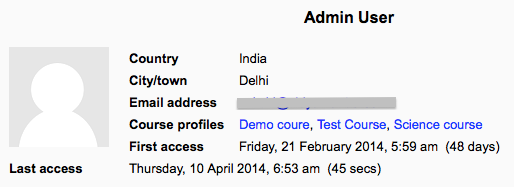
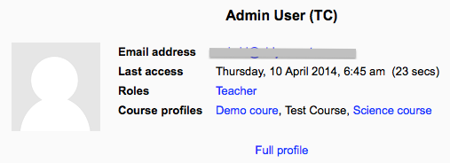

- A user may view their own full profile by clicking My profile > View profile in the Navigation block. They may then personalise the display by clicking the “customise this page” link at the top right of the screen.
- A student or course teacher may see the course profiles of users by clicking their names in Navigation > My courses (name of course)>Participants Teachers can then access the full profile by clicking the link “full profile” at the bottom of the course profile.
- An administrator may additionally access and view full profiles via Administration > Site administration > Users > Accounts > Browse list of users.
Depending on what the user has added to their profile, this gives information such as first and last access, general interests and links to individual course profiles. Users may be messaged from the link at the bottom of their full profile.
A shorter version of users’ profiles is available in the course and includes their role(s) and groups in the course and a link to message them. Those the relevant permissions are also able to access the full profile from here.
By default, only admins and managers can view full profiles.
To allow everyone i.e. all authenticated users to view full profiles:
- Go to Administration > Site administration > Users > Permissions > Define roles.
- Click the edit icon for authenticated user
- Enter moodle/user:viewdetails in the filter box, then tick the checkbox to allow this capability
- Click the ‘Save changes’ button
To allow teachers to view full profiles:
- Go to Administration > Site administration > Users > Permissions > Define roles and click the ‘Add a new role’ button
- Give the role a name, such as ‘Full profile viewer’ and tick System as the context type where the role may be assigned
- Copy and paste moodle/user:viewdetails into the filter box then tick the box to allow the capability
- Click the ‘Create this role’ button
- Go to Administration > Site administration > Users > Permissions > Assign system roles and click ‘Full profile viewer’
- Assign teachers the role of ‘Full profile viewer’ by selecting them in the list of potential users on the right and then adding them to the list on the left